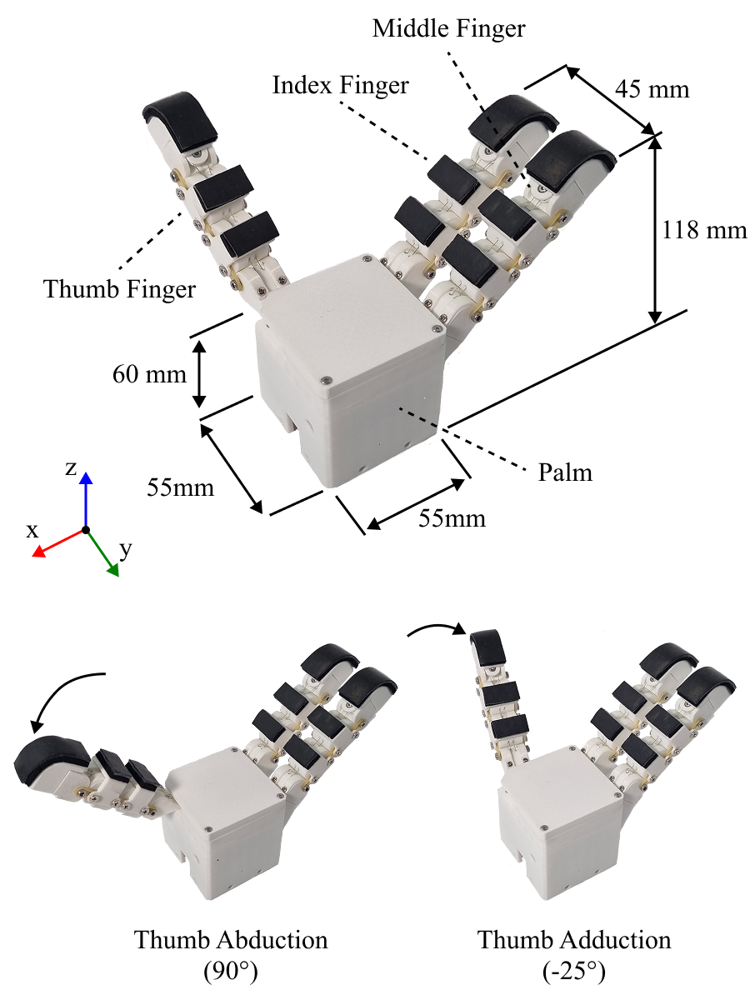
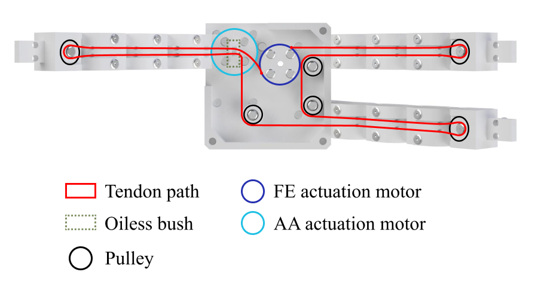
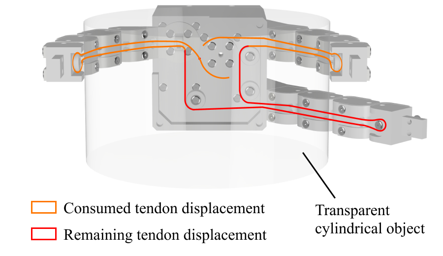
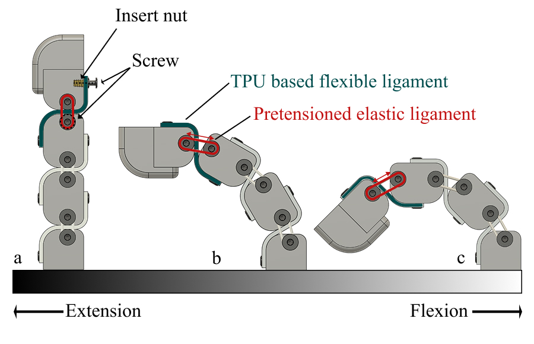
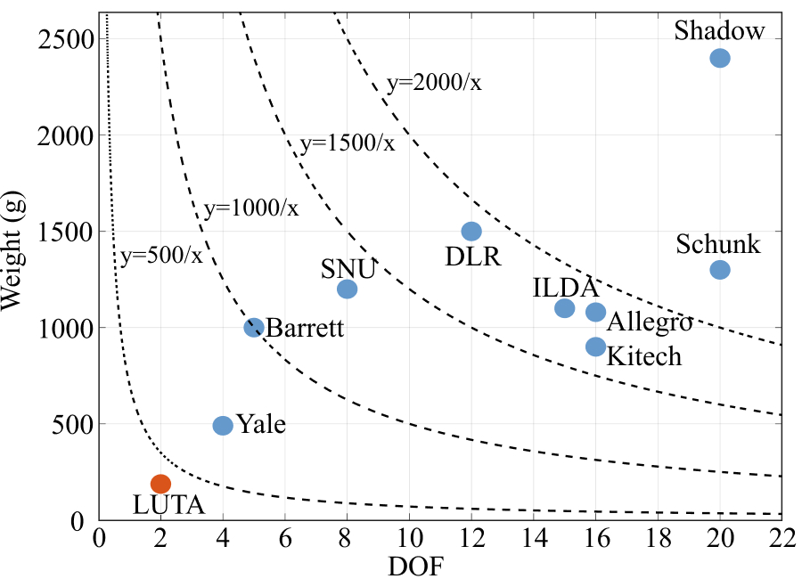

Abstract
Robotic hands are central to a wide range of manipulation tasks, enabling human-like dexterity and adaptability. However, achieving such functionality with minimal actuation and reduced mechanical complexity remains a key challenge. Conventional approaches often rely on complex actuation mechanisms, resulting in increased system weight and limited integration flexibility.
This study presents a lightweight, underactuated three-fingered robotic hand that incorporates tendon-driven actuation and compliant joint structures. A shared tendon-routing scheme enables synchronized finger flexion with a single actuator, while passive restoring forces are provided by rolling contact joints and elastic ligaments, removing the need for antagonistic actuation. All actuation components are embedded within the hand, resulting in a compact and portable configuration.
Experimental evaluations demonstrate consistent finger motion, passive adaptation to varying object geometries, and the ability to perform multiple types of grasps with an underactuated architecture. These findings indicate the potential of the proposed design to serve as an efficient and compact solution for robotic manipulation.
Hardware Configuration
The proposed robotic hand integrates all components natively within the palm structure. It features a self-contained layout housing the single servomotor transmission, rolling contact joint configurations, and full embedded tendon routing, achieving a highly portable and lightweight configuration.

Real-time Pick and Place Experiments
Demonstration of precision grasping and dynamic manipulation across diverse object profiles
⭐ Featured Demonstration: Compact Disc (Object 4)
Object 1: Bottle
Object 2: Screwdriver
Object 3: Hammer
Object 5: Tennis Ball
Object 6: Marker
Object 7: Mug
Key Mechanisms
1. Underactuated Transmission

A single servomotor and a shared tendon-routing scheme synchronize the flexion of all three fingers. This drastically reduces mechanical complexity and weight, removing the need for independent joint actuators while maintaining human-like dexterity.
2. Adaptive Grasping

The continuous tendon loop allows passive motion distribution. When one finger contacts an object and becomes constrained, the remaining tendon excursion is naturally redirected to the non-contacting fingers, enabling seamless transitions between pinch and power grasps.
3. Passive Pretension Joint

Elastic lateral ligaments with a 3 mm posterior offset provide a restorative torque for finger extension. This eliminates the need for antagonistic tendons and ensures a highly compact, compliant rolling contact joint with reliable lateral stability.
4. Lightweight Architecture

By embedding all actuation components within the palm and utilizing optimized lightweight materials, the hand achieves a highly portable configuration. This design minimizes distal inertia, making it ideal for dynamic and rapid robotic manipulation tasks.
Grasp & Object Taxonomy
Classification of targeted grasp modalities (e.g., pinch vs. power grasps) and geometric objects mapped to validate the functionality of the single-input underactuated architecture. The transition between different grasp modes occurs natively based on object dimensions and environmental constraints.

Experimental Evaluation Summary
1. Kinematic & Motion Profile
Validated synchronized multi-finger flexion paths driven by a single actuator and assessed rolling contact joint repeatability.
2. Passive Adaptation Capability
Evaluated tendon excursion redistribution upon initial object collision to confirm adaptive mechanical conformity without active feedback loops.
3. Static Grasping Reliability
Quantified retention force capabilities, payload metrics, and threshold constraints for secure grasping across diverse materials.
4. Dynamic Manipulation Pipeline
Verified end-to-end operation through continuous real-time pick-and-place trials integrated into dynamic robotic arm environments.
Full Supplementary Video Demonstration
Comprehensive technical walkthrough detailing hardware, mechanisms, and integrated manipulation trials
BibTeX Citation
@article{byun2025lutahand,
title={The LUTA Hand: Development of a Lightweight Underactuated Three-fingered Robotic Hand for Adaptive Grasping},
author={Byun, Seunghwan and Moon, Seongkyeong disintegration, Sung, Eunho and You, Seungbin and Park, Yong-Lae and Park, Jaeheung},
journal={International Journal of Control, Automation, and Systems},
volume={23},
number={12},
pages={3547--3562},
year={2025},
publisher={Springer},
doi={10.1007/s12555-025-0545-0}
}